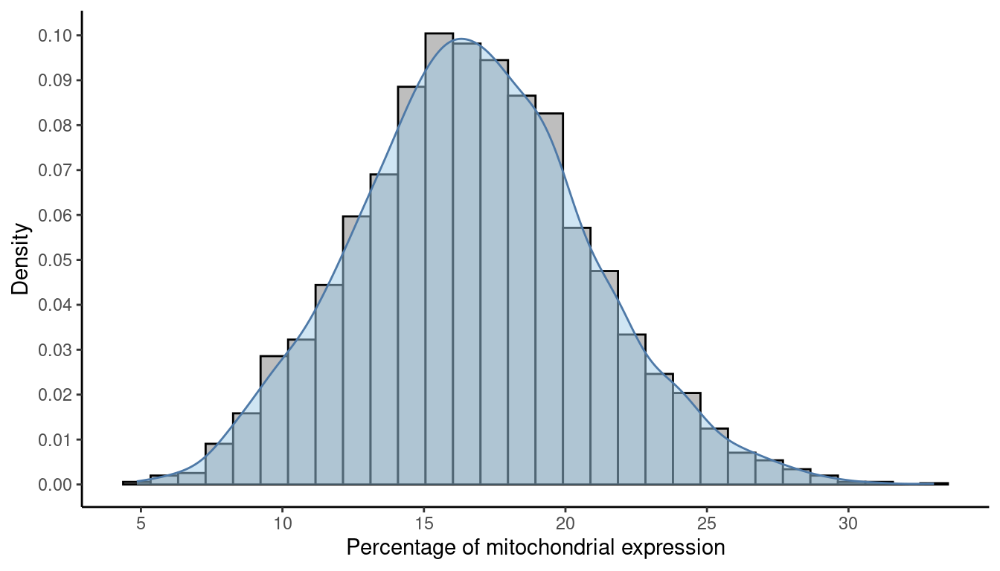
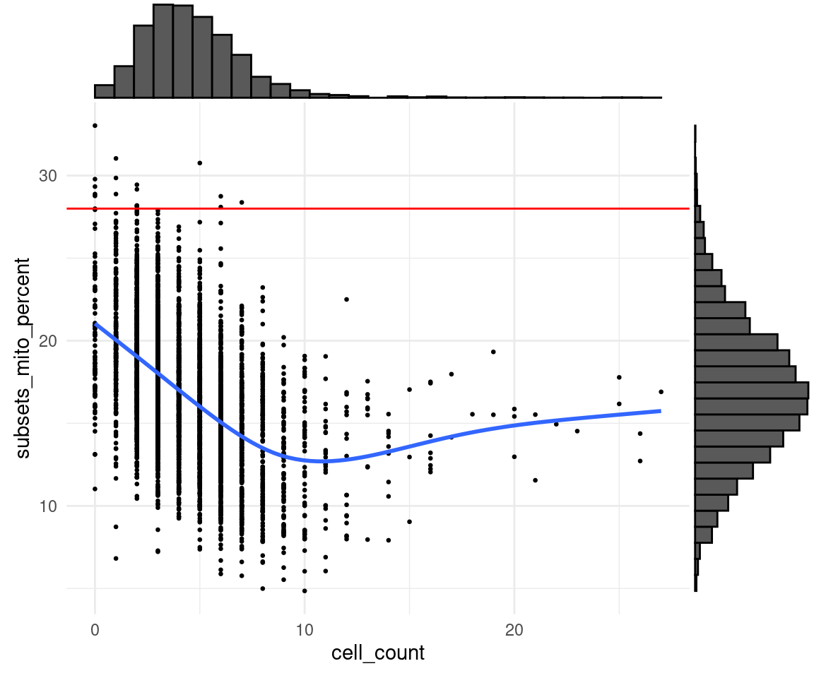
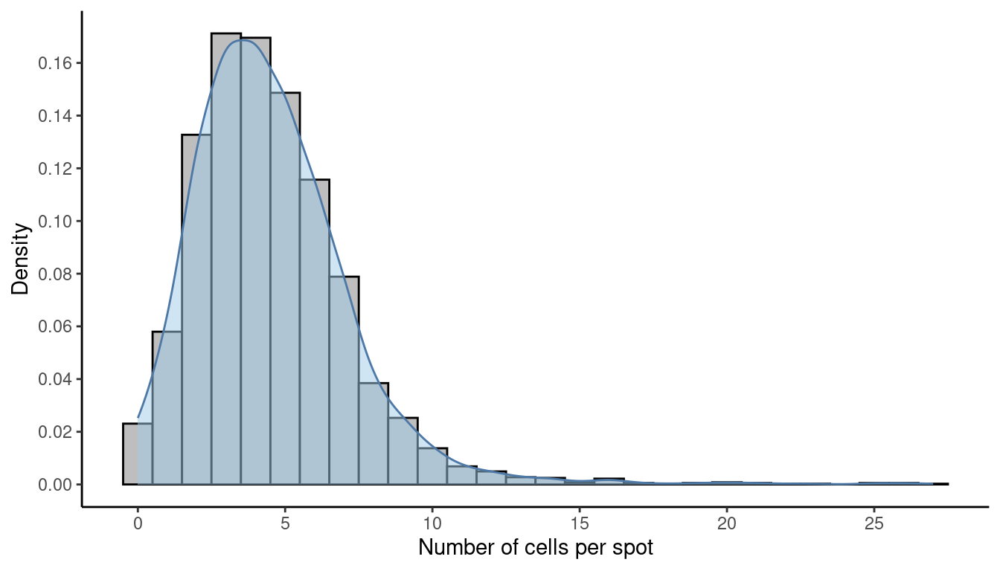
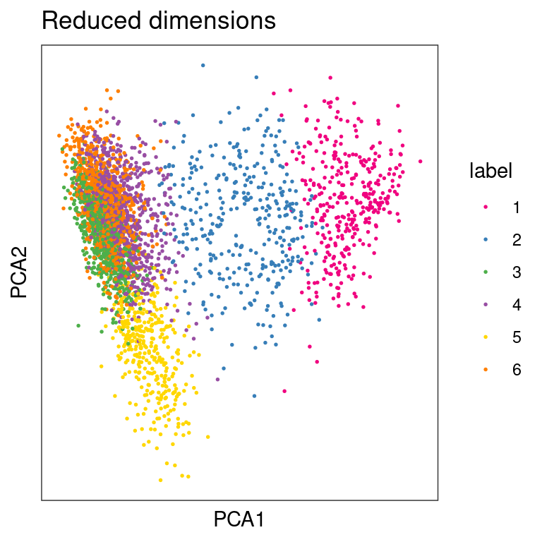
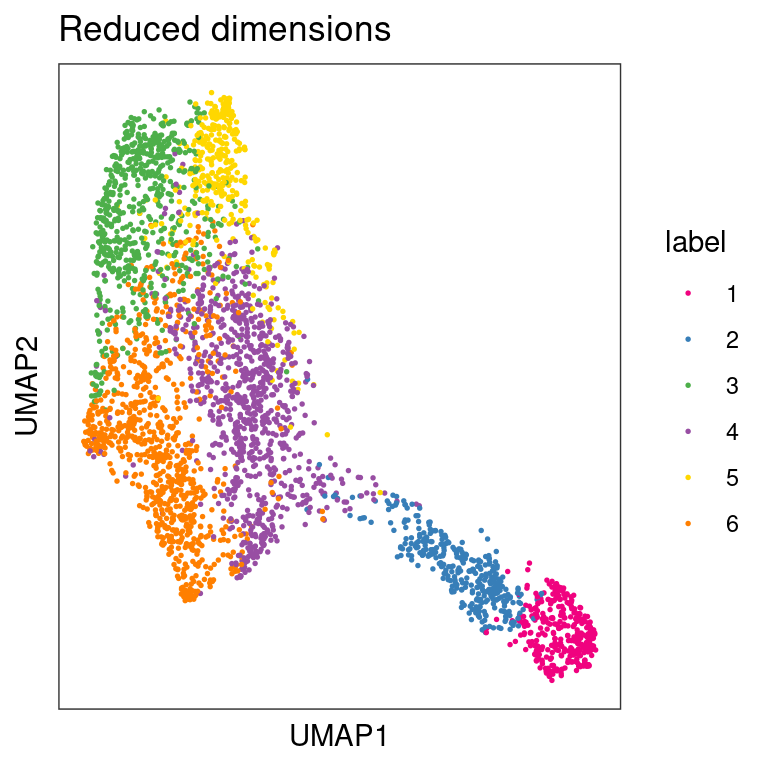
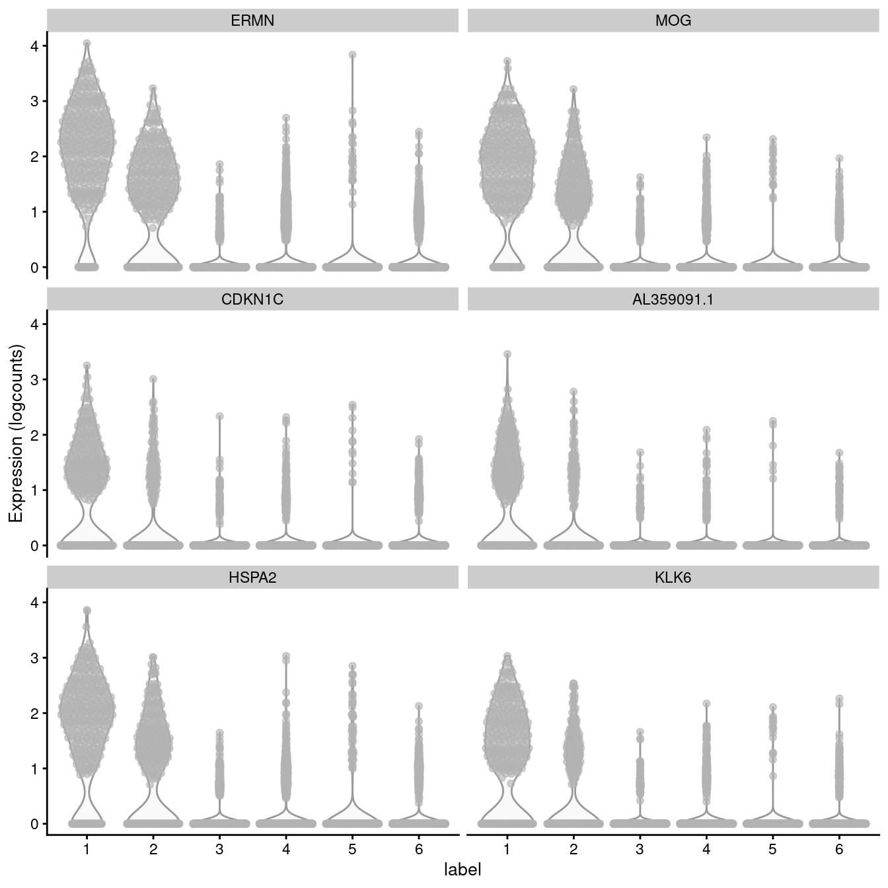

Chapter 3 Practical session 2
In this session we will demonstrate the implementation of the methods discussed earlier and will particularly focus on the most common analysis routines in STx: QC, data visualisation and clustering analysis always inside the interoperable Bioconductor environment.
Load packages
ggspavisis a Bioconductor package that includes visualization functions for spatially resolved transcriptomics datasets stored inSpatialExperimentformat from spot-based (e.g., 10x Genomics Visium) platforms (Weber and Crowell (2022)).scateris also a Bioconductor package that is a selection of tools for doing various analyses of scRNA-seq gene expression data, with a focus on quality control and visualization which has extended applications to STx data too. It is based on theSingleCellExperimentandSpatialExperimentclasses and thus is interoperable with many other Bioconductor packages such asscran,scuttleandiSEE.
3.1 Spot-level Quality Control
Spot-level quality control (sQC) procedures are employed to eliminate low-quality spots before conducting further analyses. Low-quality spots may result from issues during library preparation or other experimental procedures, such as a high percentage of dead cells due to cell damage during library preparation, or low mRNA capture efficiency caused by ineffective reverse transcription or PCR amplification. Keeping these spots usually leads to creating problems during downstream analyses.
We can identify low-quality spots using several characteristics that are also used in QC for scRNA-sq data, including:
- library size (total of UMI counts per spot is going to be different due to sequencing -like different samples in a bulk RNA-seq- or due to number of cells in the spot)
- number of expressed genes (i.e. number of genes with non-zero UMI counts per spot)
- proportion of reads mapping to mitochondrial genes (a high proportion indicates putative cell damage)
Low library size or low number of expressed features can indicate poor mRNA capture rates, e.g. due to cell damage and missing mRNAs, or low reaction efficiency. A high proportion of mitochondrial reads indicates cell damage, e.g. partial cell lysis leading to leakage and missing cytoplasmic mRNAs, with the resulting reads therefore concentrated on the remaining mitochondrial mRNAs that are relatively protected inside the mitochondrial membrane. Unusually high numbers of cells per spot can indicate problems during cell segmentation.
The idea of using scRNA-seq QC metrics in STx data comes from the fact that if we remove space and count each spot as a single cell, the two datasets share common features. However, the expected distributions for high-quality spots are different (compared to high-quality cells in scRNA-seq), since spots may contain zero, one, or multiple cells.
A few publications for further reading that can help you understand the quality controls: McCarthy et al. (2017) and Amezquita et al. (2020).
3.1.1 Plot tissue map
The DLPFC dataset we will be using comes with manual annotations by the authors Maynard et al. (2021). We can plot the tissue map with and without the annotations to get a complete view.
## Plot spatial coordinates without annotations
plotSpots(spe)
## Plot spatial coordinates with annotations
plotSpots(spe,
annotate = "ground_truth")
3.1.2 Calculating QC metrics
We will now calculate the three main QC metrics described above using methods from the scater (McCarthy et al. 2017) package and our own functions INSERT LINK OR CITATION HERE.
So far, the dataset contains both on- and off-tissue spots. For the analysis though we are only interested in the on-tissue spots. Therefore, before we run any calculations we want to remove the off-tissue spots.
NOTE: the on- or off-tissue information for each spot can be found in the colData of the spe object and in the in_tissue column where 0 = off-tissue and 1 = on-tissue.
## [1] 33538 4992## [1] 33538 3639The next thing we need to do before we make decisions on how to quality “trim” the dataset is to calculate the percentage per spot of mitochodrial gene expression and store this information inside the colData.
## Fetch mitochondrial gene names
is_mito <- grepl("(^MT-)|(^mt-)", rowData(spe)$gene_name)
rowData(spe)$gene_name[is_mito]## [1] "MT-ND1" "MT-ND2" "MT-CO1" "MT-CO2" "MT-ATP8" "MT-ATP6" "MT-CO3" "MT-ND3" "MT-ND4L" "MT-ND4" "MT-ND5" "MT-ND6" "MT-CYB"## Calculate per-spot QC metrics and store in colData
spe <- addPerCellQC(spe, subsets = list(mito = is_mito))
head(colData(spe))## DataFrame with 6 rows and 13 columns
## barcode_id sample_id in_tissue array_row array_col ground_truth cell_count sum detected
## <character> <character> <integer> <integer> <integer> <character> <integer> <numeric> <numeric>
## AAACAAGTATCTCCCA-1 AAACAAGTATCTCCCA-1 sample_151673 1 50 102 Layer3 6 8458 3586
## AAACAATCTACTAGCA-1 AAACAATCTACTAGCA-1 sample_151673 1 3 43 Layer1 16 1667 1150
## AAACACCAATAACTGC-1 AAACACCAATAACTGC-1 sample_151673 1 59 19 WM 5 3769 1960
## AAACAGAGCGACTCCT-1 AAACAGAGCGACTCCT-1 sample_151673 1 14 94 Layer3 2 5433 2424
## AAACAGCTTTCAGAAG-1 AAACAGCTTTCAGAAG-1 sample_151673 1 43 9 Layer5 4 4278 2264
## AAACAGGGTCTATATT-1 AAACAGGGTCTATATT-1 sample_151673 1 47 13 Layer6 6 4004 2178
## subsets_mito_sum subsets_mito_detected subsets_mito_percent total
## <numeric> <numeric> <numeric> <numeric>
## AAACAAGTATCTCCCA-1 1407 13 16.6351 8458
## AAACAATCTACTAGCA-1 204 11 12.2376 1667
## AAACACCAATAACTGC-1 430 13 11.4089 3769
## AAACAGAGCGACTCCT-1 1316 13 24.2223 5433
## AAACAGCTTTCAGAAG-1 651 12 15.2174 4278
## AAACAGGGTCTATATT-1 621 13 15.5095 4004After calculating the necessary metrics, we need to apply some cut-off thresholds for each metric to perform QC over each spot. What is important to remember here is that each dataset might need slightly different cut-off values to be applied. As a result we cannot rely on identifying a single value to use every time and we need to rely on plotting these metrics and making a decision on a dataset-by-dataset basis.
3.1.3 Library size threshold plot
We can plot a histogram of the library sizes across spots. The library size is the number of UMI counts in each spot. We can find this information in the sum column in the colData.
## Density and histogram of library sizes
ggplot(data = as.data.frame(colData(spe)),
aes(x = sum)) +
geom_histogram(aes(y = after_stat(density)),
colour = "black",
fill = "grey") +
geom_density(alpha = 0.5,
adjust = 0.5,
fill = "#A0CBE8",
colour = "#4E79A7") +
scale_x_continuous(breaks = scales::pretty_breaks(n = 10)) +
scale_y_continuous(breaks = scales::pretty_breaks(n = 10)) +
xlab("Library size") +
ylab("Density") +
theme_classic()
As we can see there are no obvious issues with the library sizes. An example of an issue could be a high frequency of small libraries which would indicate poor experimental output. Generally we do not want to keep spots with too small libraries.
If the dataset we are analysing contains the number of cells that are present in each spot (this one does), then it makes sense to also plot the library sizes against the number of cells per spot. In that way we are making sure that we don’t remove any spots that may have biological meaning. In many cases though the datasets do not have such information unless we can generate it using a nuclei segmentation tool to extract this information from the H&E images.
The horizontal red line (argument threshold in the plotQC function) shows a first guess at a possible filtering threshold for library size based on the above histogram. The below plot can also be plotted using ggplot. For the ggplot implementation have a look at the appendix.
## Scatter plot, library size against number of cells per spot
plotQC(spe, type = "scatter",
metric_x = "cell_count", metric_y = "sum",
threshold_y = 700)We need to keep in mind here that the threshold is, up to an extend, arbitrary. It is crucial, then, to have a look at the number of spots that are left out of the dataset because of this cut-off value and also have a look at their putative spatial patterns. If, by any chance, we filtered out spots with biological relevance, then we will observe some patterns on the tissue map that are correlating with some of the known biological structures of the tissue. As a result, we probably have set our threshold too high.
## Select library size threshold
qc_lib_size <- colData(spe)$sum < 700
## Check how many spots are filtered out
table(qc_lib_size)## qc_lib_size
## FALSE TRUE
## 3628 11## Apply threshold
colData(spe)$qc_lib_size <- qc_lib_size
## Check putative spatial patterns of removed spots
plotQC(spe, type = "spots",
discard = "qc_lib_size")As an aside, try to illustrate what happens if we set the threshold too high (i.e., 2000 UMI counts).
NOTE: For reference, remember the ground truth layers in this dataset that we plotted at the beginning.
3.1.4 Number of expressed genes
As we did with the library sizes, we can plot a histogram of the number of expressed genes across spots. A gene is expressed in a spot if it has at least one count in it. We can find this information in the detected column in the colData.
We will follow the same logic for the plots as we did for the library size earlier.
## Density and histogram of expressed genes
ggplot(data = as.data.frame(colData(spe)),
aes(x = detected)) +
geom_histogram(aes(y = after_stat(density)),
colour = "black",
fill = "grey") +
geom_density(alpha = 0.5,
adjust = 0.5,
fill = "#A0CBE8",
colour = "#4E79A7") +
scale_x_continuous(breaks = scales::pretty_breaks(n = 10)) +
scale_y_continuous(breaks = scales::pretty_breaks(n = 10)) +
xlab("Genes expressed in each spot") +
ylab("Density") +
theme_classic()
# plot number of expressed genes vs. number of cells per spot
plotQC(spe, type = "scatter",
metric_x = "cell_count", metric_y = "detected",
threshold_y = 500)## Select expressed genes threshold
qc_detected <- colData(spe)$detected < 500
## Check how many spots are filtered out
table(qc_detected)## qc_detected
## FALSE TRUE
## 3628 11## Apply threshold
colData(spe)$qc_detected <- qc_detected
## Check for putative spatial pattern of removed spots
plotQC(spe, type = "spots",
discard = "qc_detected")Again, try to illustrate what happens if we set the threshold too high (i.e., 1000 expressed genes).
NOTE: For reference, remember the ground truth layers in this dataset that we plotted at the beginning.
3.1.5 Percentage of mitochondrial expression
As we briefly touched at the beginning, a high proportion of mitochondrial reads indicates low cell quality, probably due to cell damage.
To investigate the percentage of mitochondrial expression across spots we need to take a look in the column subsets_mito_percent in the colData.
## Density and histogram of percentage of mitochondrial expression
ggplot(data = as.data.frame(colData(spe)),
aes(x = subsets_mito_percent)) +
geom_histogram(aes(y = after_stat(density)),
colour = "black",
fill = "grey") +
geom_density(alpha = 0.5,
adjust = 0.5,
fill = "#A0CBE8",
colour = "#4E79A7") +
scale_x_continuous(breaks = scales::pretty_breaks(n = 10)) +
scale_y_continuous(breaks = scales::pretty_breaks(n = 10)) +
xlab("Percentage of mitochondrial expression") +
ylab("Density") +
theme_classic()
# plot mitochondrial read proportion vs. number of cells per spot
plotQC(spe, type = "scatter",
metric_x = "cell_count", metric_y = "subsets_mito_percent",
threshold_y = 28)
## Select expressed genes threshold
qc_mito <- colData(spe)$subsets_mito_percent > 28
## Check how many spots are filtered out
table(qc_mito)## qc_mito
## FALSE TRUE
## 3622 17## Apply threshold
colData(spe)$qc_mito <- qc_mito
## Check for putative spatial pattern of removed spots
plotQC(spe, type = "spots",
discard = "qc_mito")
Again, try to illustrate what happens if we set the threshold too low (i.e., 20 0r 25%).
NOTE: For reference, remember the ground truth layers in this dataset that we plotted at the beginning.
3.1.6 Number of cells per spot
Number of cells per spot is an attribute that not all datasets include. Nonetheless, if it exists, we can use this information to further control the quality of the dataset prior to any downstream analysis. Ofcourse, the number of cells per spot depends on the tissue type and organism and according to 10X Genomics, each spot can contain between 0 and 10 cells.
To investigate the number of cells in each spot looking for any outlier values that could indicate problems we need to take a look in the column cell_count in the colData.
## Density and histogram of the number of cells in each spot
ggplot(data = as.data.frame(colData(spe)),
aes(x = cell_count)) +
geom_histogram(aes(y = after_stat(density)),
colour = "black",
fill = "grey") +
geom_density(alpha = 0.5,
#adjust = 0.5,
fill = "#A0CBE8",
colour = "#4E79A7") +
scale_x_continuous(breaks = scales::pretty_breaks(n = 10)) +
scale_y_continuous(breaks = scales::pretty_breaks(n = 10)) +
xlab("Number of cells per spot") +
ylab("Density") +
theme_classic()
##
## 0 1 2 3 4 5 6 7 8 9 10 11 12 13 14 15 16 17 18 19 20 21 22 23 25 26 27
## 84 211 483 623 617 541 421 287 140 92 50 25 18 10 9 3 8 2 1 2 3 2 1 1 2 2 1# plot number of expressed genes vs. number of cells per spot
plotQC(spe, type = "scatter",
metric_x = "cell_count", metric_y = "detected",
threshold_x = 10)
As we can see from both the histogram and the scatter plot there is a tail of very high values, which could indicate problems for these spots. More specifically, we can see from the scatter plot that most of the spots with very high cell counts also have low numbers of expressed genes. This indicates problems with the experiment on these spots, and they should be removed.
## Select expressed genes threshold
qc_cell_count <- colData(spe)$cell_count > 10
## Check how many spots are filtered out
table(qc_cell_count)## qc_cell_count
## FALSE TRUE
## 3549 90## Apply threshold
colData(spe)$qc_cell_count <- qc_cell_count
## Check for putative spatial pattern of removed spots
plotQC(spe, type = "spots",
discard = "qc_cell_count")
While there is a spatial pattern to the discarded spots, it does not appear to be correlated with the known biological features (cortical layers). The discarded spots are all on the edges of the tissue. It seems plausible that something has gone wrong with the cell segmentation on the edges of the images, so it makes sense to remove these spots.
The discarded spots are located at the tissue edges, indicating a potential issue with cell segmentation in those regions. Therefore, it is reasonable to remove these spots from the analysis.
3.1.7 Remove low-quality spots
Since we have calculated different spot-level QC metrics and selected thresholds for each one, we can combine them to identify a set of low-quality spots, and remove them from our spe object.
We also check again that the combined set of discarded spots does not correspond to any obvious biologically relevant group of spots.
## Check the number of discarded spots for each metric
apply(cbind(qc_lib_size, qc_detected, qc_mito, qc_cell_count), 2, sum)## qc_lib_size qc_detected qc_mito qc_cell_count
## 11 11 17 90## Combine together the set of discarded spots
discard <- qc_lib_size | qc_detected | qc_mito | qc_cell_count
## Store the set in the object
colData(spe)$discard <- discard
## Check the spatial pattern of combined set of discarded spots
plotQC(spe, type = "spots",
discard = "discard")
Since this dataset has also manual annotation (remember here) we see that there are locations that are not annotated (marked with NA). We could further remove those locations to reduce noise and further increase the quality of the dataset.
## Select locations without annotation
qc_NA_spots <- is.na(colData(spe)$ground_truth)
## Combine together the set of discarded spots
discard <- qc_lib_size | qc_detected | qc_mito | qc_cell_count | qc_NA_spots
## Store the set in the object
colData(spe)$discard <- discard
## Check the spatial pattern of combined set of discarded spots
plotQC(spe, type = "spots",
discard = "discard")
3.2 Normalisation of counts
3.2.1 Background
The most common method (if not the only one so far) of normalising gene expression in STx data is the method used in scRNA-seq data. Namely, this is a log-transformation (logcounts). For this to be applied, we treat each spot as being a single cell.
It is clear from what we discussed earlier that each spot can contain more than one cells. This is a limitation to the technology itself and to our methods of analysing STx data so far. Nonetheless, since STx expression data look like scRNA-seq we apply scRNA-seq methods for normalising (not all methods can be applied though).
Here we will be using methods from the scater (McCarthy et al. 2017) and scran (Lun, McCarthy, and Marioni 2016) packages that calculate logcounts using library size factors. The library size factors approach is arguably the simplest approach for STx data. Other approaches used in scRNA-seq are more difficult to justify their use in STx because of two main reasons:
- Spots can contain multiple cells of different cell-types.
- Datasets can include multiple tissue samples which will lead to different clusterings.
3.2.2 Log-tranformation of counts
## Calculate library size factors
spe <- computeLibraryFactors(spe)
## Have a look at the size factors
summary(sizeFactors(spe))## Min. 1st Qu. Median Mean 3rd Qu. Max.
## 0.1514 0.6326 0.9011 1.0000 1.2849 3.7500## Density and histogram of library sizes
ggplot(data = data.frame(sFact = sizeFactors(spe)),
aes(x = sFact)) +
geom_histogram(aes(y = after_stat(density)),
colour = "black",
fill = "grey") +
geom_density(alpha = 0.5,
adjust = 0.5,
fill = "#A0CBE8",
colour = "#4E79A7") +
scale_x_continuous(breaks = scales::pretty_breaks(n = 10)) +
scale_y_continuous(breaks = scales::pretty_breaks(n = 10)) +
xlab("Library size") +
ylab("Density") +
theme_classic()
The log-transformation that takes place is a log2-transformation and in order to avoid - Infinity values we add a pseudo value of 1. Both the log2- transformation and the pseudocount of 1 are defaults in this method.
## Calculate logcounts and store in the spe object
spe <- logNormCounts(spe)
## Check that a new assay has been added
assayNames(spe)## [1] "counts" "logcounts"3.3 Selecting genes
3.3.1 Background
Gene selection -or alternatively “feature selection”- is applied to identify genes that are going to be informative and can produce valuable information form the downstream analyses. The most common way of applying gene selection is to select genes that are highly variable (HVGs). The assumption is that since we quality-controled and normalised our dataset, the genes with high variability are the ones that contain high levels of biological variability too. Since here we have a spatial dataset we can also try to identify spatially variable genes too (SVGs).
What is important to note here is that HVGs are identified using features like gene expression. Spatial information does not play a role in finding HVGs. STx data pose a dilemma; does the meaningful spatial information reflects only spatial distribution of major cell types or reflects additional important spatial features? If the first is true, then, relying on HVGs can be enough. If the second also holds true, then, it is important to identify SVGs as well.
3.3.2 Highly Variable Genes (HVGs)
Here we will be using methods from the scran package (Lun, McCarthy, and Marioni 2016) to identify a set of HVGs. Again, here we need to remember that scran methods were developed for scRNA-seq and we are performing the analysis under the assumption that the spots of an STx experiment can be treated as single cells.
In this dataset, the mitochondrial genes are too highly expressed and are not of major biological interest. As a result, if we are to identify true HVGs, we first need to remove the mitochondrial genes.
Then, we apply methods from scran that give a list of HVGs, which can be used for further downstream analyses.
First we model the variance of the log-expression profiles for each gene, decomposing it into technical and biological components based on a fitted mean-variance trend.
## Fit mean-variance relationship
dec <- modelGeneVar(spe)
## Visualize mean-variance relationship
fit <- metadata(dec)
fit_df <- data.frame(mean = fit$mean,
var = fit$var,
trend = fit$trend(fit$mean))
ggplot(data = fit_df,
aes(x = mean, y = var)) +
geom_point() +
geom_line(aes(y = trend), colour = "dodgerblue", linewidth = 1.5) +
labs(x = "mean of log-expression",
y = "variance of log-expression") +
theme_classic() The
The trend function that we used above is returned from the modelGeneVar function and returns the fitted value of the trend at any value of the mean.
We select the top 10% of genes based on their variability The parameter prop defines how many HVGs we want. For example prop = 0.1 returns the top 10% of genes.
## Select top HVGs
top_hvgs <- getTopHVGs(dec, prop = 0.1)
## How many are the HVGs?
length(top_hvgs)## [1] 14293.3.3 Spatially variable genes (SVGs)
SVGs are genes with a highly spatially correlated pattern of expression, which varies along with the spatial distribution of a tissue structure of interest. This phenomenon is also called spatial autocorrelation and is a phenomenon that underlies all types of spatial data as we will discuss later.
The field of geography has developed some statistical measures to calculate spatial autocorrelation. Examples of these are Moran’s I (“Notes on Continuous Stochastic Phenomena on JSTOR” 1950) and Geary’s C (“The Contiguity Ratio and Statistical Mapping on JSTOR” 1954) that can be used to rank genes by the observed spatial autocorrelation to identify SVGs.
Several sophisticated new statistical methods to identify SVGs in SRT data have also recently been developed. These include SpatialDE (Svensson, Teichmann, and Stegle 2018), SPARK (Sun, Zhu, and Zhou 2020), and SPARK-X (Zhu, Sun, and Zhou 2021).
3.3.4 Integration of HVGs and SVGs
A recent benchmark paper (Li et al. 2022) showed that integrating HVGs and SVGs to generate a combined set of features can improve downstream clustering performance in SRT data. This confirms that SVGs contain additional biologically relevant information that is not captured by HVGs in these datasets. For example, a simple way to combine these features is to concatenate columns of principal components (PCs) calculated on the set of HVGs and the set of SVGs (excluding overlapping HVGs), and then using the combined set of features for further downstream analyses (Li et al. 2022).
3.4 Dimensionality reduction
3.4.1 Background
Dimensionality reduction is an important step prior to any downstream clustering attempts. There are two main ways of reducing the dimensions of a dataset. The gold standard is Principal Components Analysis (PCA) and the other -a more recent one- Uniform manifold Approximation and Projection (UMAP) (McInnes, Healy, and Melville 2018). The main difference between the two is that the distances between the data points in PCA space are interpretable and can be used to cluster the data points while the distances in a UMAP embedding are not interpretable and thus, cannot be used to cluster the data points. As a result, we will be using PCA to reduce the dimensions of our dataset to assist clustering and UMAP to further reduce the principal components (PCs) in a two-dimensional space and produce better visualisations for the PCA.
Reducing the dimensions of the dataset is the output of a PCA. But, what are the main reasons we do so? One reason is to reduce the noise introduced by biologically uninteresting genes that their expression might show some random variation -and that is why they are in the HVGs list-. The other reason is to improve the computational efficiency of downstream analyses like clustering. In an STx experiment, like the one we are analysing here, we have more than 3000 spots and almost 1500 HVGs. As as result, each spot has 1500 attributes based on which the clustering will take place. This increase in the number of variables that differentiate or cluster together spots is leading to the curse of dimensionality (Keogh and Mueen 2017) which makes the data points (spots) look equidistant in attribute space resulting in poor clustering output.
3.4.2 PCA: Principal component analysis
Here we will use an efficient implementation of PCA provided in the scater package (McCarthy et al. 2017) and retain the top 50 PCs for further downstream analyses. The random seed is required for reproducibility reasons because this implementation uses randomisation.
## Set seed
set.seed(987)
## Compute PCA
spe <- runPCA(spe, subset_row = top_hvgs)
## Check correctness - names
reducedDimNames(spe)## [1] "PCA"## [1] 3511 503.4.3 UMAP: Uniform Manifold Approximation and Projection
Here we will also run UMAP -using scater’s implementation- on the 50 PCs generated above and retain the top 2 UMAP components to visualise results.
## Set seed
set.seed(987)
## Compute UMAP on top 50 PCs
spe <- runUMAP(spe, dimred = "PCA")
## Check correctness - names
reducedDimNames(spe)## [1] "PCA" "UMAP"## [1] 3511 23.4.4 UMAP visualisations
We can generate plots either using plotting functions from the ggspavis package or ggplot2 package. Later on clustering, we will add cluster labels to these reduced dimension plots for an off-tissue visualisation.
## Plot top 2 PCA dimensions
plotDimRed(spe, type = "PCA")
ggplot(data = as.data.frame(spe@int_colData@listData$reducedDims$PCA),
aes(x = PC1, y = PC2)) +
geom_point(size = 0.5) +
labs(title = "Reduced dimensions: PCA",
x = "PC1",
y = "PC2") +
theme_classic()
## Plot top 2 UMAP dimensions
plotDimRed(spe, type = "UMAP")
ggplot(data = as.data.frame(spe@int_colData@listData$reducedDims$UMAP),
aes(x = UMAP1, y = UMAP2)) +
geom_point(size = 0.5) +
labs(title = "Reduced dimensions: UMAP",
x = "UMAP1",
y = "UMAP2") +
theme_classic()
3.5 Clustering
3.5.1 Background
The clustering of observations into statistically similar groups is a well-established application in both bulk and single-cell RNA-Seq analysis. Clustering is a helpful tool because it structures and orders the data, allowing useful insights to be gained from complex, multivariate datasets and use those insights to classify the observed data or to generate hypotheses.
Common clustering methods are applied to ST data based on correlation or statistical distance of gene expression measurements. As we briefly touched above, the dimensionality of ST data means that sample distances in gene expression space tend to be small and not reliable for identifying clusters, so feature selection (gene selection) or dimensionality reduction approaches (i.e., PCA, UMAP) tend to be taken before clustering.
Common approaches to clustering gene expression data include k-means, hierarchical and Louvain algorithms, and all have been applied to the clustering of ST data. Some of these methods are implemented in some of the most popular single-cell analysis packages, such as Seurat (Hao et al. 2021) and scran (Lun, McCarthy, and Marioni 2016) and have been used for clustering in a number of ST studies.
3.5.2 Clustering on HVGs
Here, we apply graph-based clustering to the top 50 PCs calculated on the set of selected HVGs, using the Walktrap method implemented in scran (Lun, McCarthy, and Marioni 2016). To do so, we assume that (i) each spot is equal to a cell and (ii) we can detect from the gene expression the biologically informative spatial distribution patterns of cell types.
## Set seed
set.seed(987)
## Set number of Nearest-Neighbours (NNs)
k <- 10
## Build the k-NN graph
g <- buildSNNGraph(spe, k = k, use.dimred = "PCA")
## Run walktrap clustering
g_walk <- igraph::cluster_walktrap(g)
## Get the cluster labels
clus <- g_walk$membership
## Check how many
table(clus)## clus
## 1 2 3 4 5 6
## 350 354 661 895 366 8853.5.3 HVGs clustering visualisations
We can visualise the clusters in two ways:
1. plotting in spatial coordinates on the tissue map
2. plotting in the UMAP/PCA embeddings.
We can use plotting functions either from the ggspavispackage.
For reference, we will also display the ground truth (manually annotated) labels available for this dataset.
## Plot in tissue map
plotSpots(spe, annotate = "label",
palette = "libd_layer_colors")
## Plot ground truth in tissue map
plotSpots(spe, annotate = "ground_truth",
palette = "libd_layer_colors")

## Plot clusters in PCA space
plotDimRed(spe, type = "PCA",
annotate = "label", palette = "libd_layer_colors")
## Plot clusters in UMAP space
plotDimRed(spe, type = "UMAP",
annotate = "label", palette = "libd_layer_colors")
From the visualizations, we can see that the clustering reproduces, up to an extend, the known biological structure of the tissue, but not perfectly. One reason for this could be the fact that each spot may comprise of many different cells whose gene expression profiles are diluted in the overall profile of the spot, thus leading to low-quality clustering.
3.5.4 Spatially-aware clustering
In STx data, we can also perform clustering that takes spatial information into account, for example to identify spatially compact or spatially connected clusters.
A simple strategy is to perform graph-based clustering on a set of features (columns) that includes both molecular features (gene expression) and spatial features (x-y coordinates). In this case, a crucial tuning parameter is the relative amount of scaling between the two data modalities – if the scaling is chosen poorly, either the molecular or spatial features will dominate the clustering. Depending on data availability, further modalities could also be included. In this section, we will include some examples on this clustering approach.
3.6 Inter-cluster differentially expressed genes (DGEs)
3.6.1 Background
Here, we will identify differentially expressed genes bewteen clusters.
We will use the findMarkers implementation from the scran (Lun, McCarthy, and Marioni 2016). This implementation uses a binomial test, which tests for genes that differ in the proportion expressed vs. not expressed between clusters. This is a more stringent test than the default t-tests, and tends to select genes that are easier to interpret and validate experimentally.
3.6.2 DGEs identification
## Set gene names as row names ease of plotting
rownames(spe) <- rowData(spe)$gene_name
## Test for DGEs
markers <- findMarkers(spe, test = "binom", direction = "up")
## Check output
markers## List of length 6
## names(6): 1 2 3 4 5 6The output from the findMarkers implementation is a list of length equal to the number of clusters. Each element of the list contains the Log-Fold-Change (LogFC) of each gene between one cluster and all others.
3.6.3 DGEs visualisation
Here we will plot LogFCs for cluster 1 against all other clusters
## Select cluster 1 genes
interesting <- markers[[1]]
## Get the top genes
best_set <- interesting[interesting$Top <= 5, ]
## Calculate the effect
logFCs <- getMarkerEffects(best_set)
## Plot a heat map
pheatmap(logFCs, breaks = seq(-5, 5, length.out = 101))
Below we will plot the log-transformed normalised expression of the top genes for one cluster alongside their expression in the other clusters.
## Select genes
top_genes <- head(rownames(interesting))
## Plot expression
plotExpression(spe, x = "label", features = top_genes)